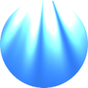
Текущая
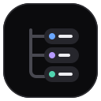
1 · Вложенность
2 · Вкладки
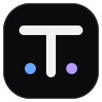
3 · Буква T
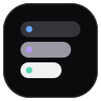
4 · Ступени
5 · Папка
6 · Группы
7 · Окно
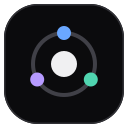
8 · Орбита
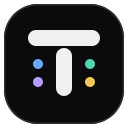
9 · T и метки
10 · Скобки
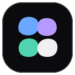
11 · Блобы
12 · Страница
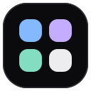
13 · Мягкие
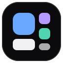
14 · Иерархия
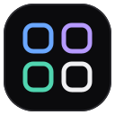
15 · Контуры
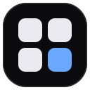
16 · Акцент
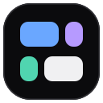
17 · Мозаика
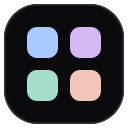
18 · Пастель
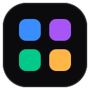
19 · Яркие
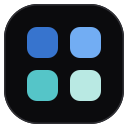
20 · Океан
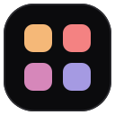
21 · Закат
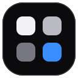
22 · Моно + синий
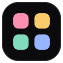
23 · Конфетти
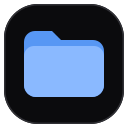
24 · Голубая папка
25 · Сиреневая папка
26 · Жёлтая папка
27 · Мятная папка
28 · Контур папки